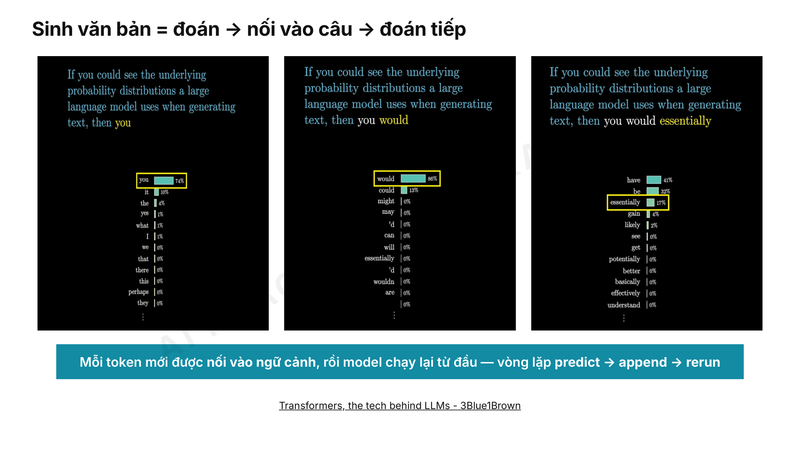

“Mỗi token mới được nối vào ngữ cảnh, rồi model chạy lại từ đầu — vòng lặp predict → append → rerun.”
Giảng viên giải thích model dự đoán token tiếp theo, nối token vào chuỗi ban đầu rồi lặp lại quá trình đến khi sinh xong.
Tutor không được thêm kết luận vượt ra ngoài hai căn cứ này.